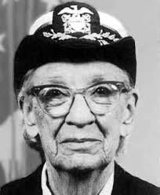

Grace Hopper
Biography
D.O.B
D.O.B
09-Dec-1990
D.O.D
01-Jan-1992 (aged 85)
Nicknames
Amazing Grace
Rank
Rear admiral
Awards
- Defense Distinguished Service Medal
- Legion of Merit
- Meritorious Service Medal
- American Campaign Medal
- World War II Victory Medal
- National Defense Service Medal
- Naval Reserve Medal
- Presidential Medal of Freedom
Education
1983: Ph.D. in mathematics from Yale
1928: B.A in mathematics and physics
Experience
1930: Professor of Mathematics - Vassar College
1943: Joined Naval Rserve
1944: Commissioned as a lieutenant: assigned to Bureau of Ordnance Computation Project at Harvard University, where she learned to program a Mark I computer.
1947: A moth was found to have shorted out the Mark II, and is sometimes given credit for the invention of the term "computer bug"—though she didn't actually author the term, she did help popularize it.
1949: Oversaw programming for the UNIVAC computer.
1952: Created the first compiler for computer languages (a compiler renders worded instructions into code that can be read by computers).
This compiler was a precursor for the Common Business Oriented Language, or COBOL, a widely adapted language that would be used around the world.
1966: Retired from Naval Reserve, was recalled to active duty at age 60 - to tackle standardizing communication between different computer languages.
1986: Officially retired, at age 79, she was a rear admiral as well as the oldest serving officer in the service.
Legacy
- Awarded the National Medal of Technology in 1991—becoming the first female individual recipient of the honor.
- Encouraging young people to learn how to program
- The Grace Hopper Celebration of Women In Computing Conference is a technical conference that encourages women to become part of the world of computing.
- In 2016, Hopper was posthumously honored with the Presidential Medal of Freedom by Barack Obama.